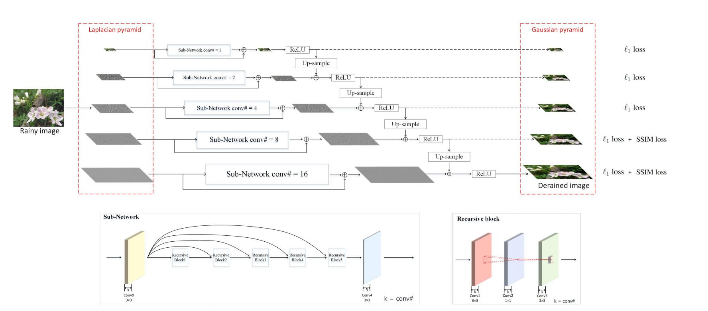

在这收获的6月里，我实验室接连收到论文录用喜讯。此次更加令人激动的便是实验室由傅雪阳博士、梁柏荣硕士合作的论文“Lightweight Pyramid Networks for Image Deraining”被TNNLS录用，该期刊最新IF高达11.68。

随着大数据的爆发和计算机运算能力的快速提升，深度学习得到了快速的发展。在图像去雨领域，现有的深度卷积神经网络已经取得了巨大的成功，但其代价是该类深度卷积神经网络模型往往拥有巨大的参数量。模型的参数量过大会影响其潜在的应用价值，例如在移动设备中的应用。在本文中，作者为单幅图像去雨任务提出了一个轻量级的金字塔网络LPNet，使用domain-specific知识来简化学习过程，而不是设计复杂的网络结构。作者发现当引入混合高斯-拉普拉斯图像金字塔分解技术到神经网络中，塔式结构的学习问题得到了巨大的简化，用较少参数的浅层网络便可以处理好该问题。作者利用递归和残差网络结构来设计所提出的LPNet，该网络结构拥有少于8K的参数量同时能实现 state-of-the-art 的去雨性能。同时，作者也讨论了LPNet运用于其他low-level和high-level视觉任务的潜在价值。
IEEE Transactions on Neural Networks and Learning Systems (TNNLS) 是业内著名的一区期刊，今年影响因子达到11.68。期刊主要接收人工智能，电子电器，计算机理论方面投稿。该期刊投稿时间长，稿件审查非常严格，国内每年在该期刊上发表的论文极少。
本篇论文由丁兴号，黄悦，John Paisley三位老师共同指导完成。该论文的发表是我实验室在机器学习领域常年耕耘取得的又一标志性收获。也代表着我实验室在去雨领域的开创性地位和深厚功底。
傅雪阳是我实验室2014级博士，博士四年期间在以去雨为代表的图像处理领域取得了开创性研究，目前在中国科学技术大学担任特聘副研究员。梁柏荣是我实验室2016级硕士，此前硕士研究期间发表A类CVPR一篇，此次再次收获一区代表着我实验室在人才培养上的进步。该生目前在百度就职。